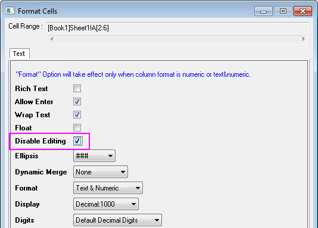

FAQ-273 Wie behalte ich bestimmte Daten in der Analysevorlage?
keep-data-in-template
Letztes Update: 04.02.2015
Standardmäßig werden alle Arbeitsblattdaten gelöscht, wenn Sie das Arbeitsblatt als Analysevorlage speichern. Um einige Daten zu behalten, können Sie:
- Die Zellen markieren, die die gewünschten Daten enthalten.
- Mit der rechten Maustaste klicken und die Option Zellen formatieren im Kontextmenü auswählen.
- Aktivieren Sie in dem aufgerufenen Dialog Zellen formatieren das Kontrollkästchen Bearbeiten deaktivieren.
- 
- Verwenden Sie Datei: Arbeitsmappe als Analysevorlage speichern, um eine Vorlage für zukünftige Analysen zu speichern.
Schlüsselwörter: Analysevorlage, Zellen formatieren, Datenformat, Bearbeiten deaktivieren
Origin-Version mind. erforderlich: 2015 SR0